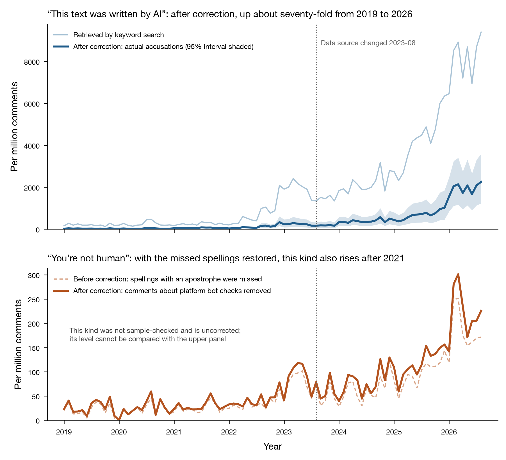
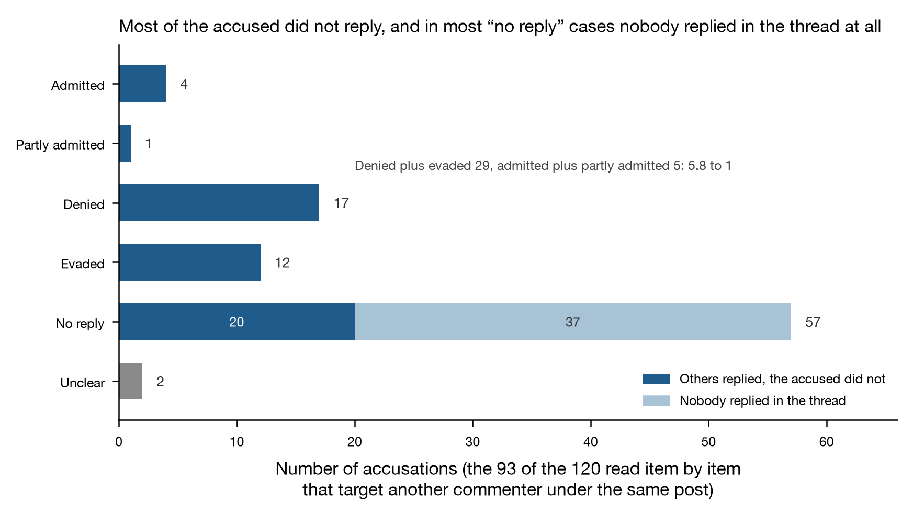

I want to establish one thing: on public online forums, when one user says of what another user wrote that it was "not written by you but by a machine", is this kind of statement actually increasing, by how much, and how do the people accused respond? The question needs answering because this is a new kind of public accusation, and there is as yet no established way to adjudicate it. An accusation of plagiarism can be checked against the original text; an accusation of impersonation can be checked against an identity; when a passage is accused of having been written by a machine, neither the accuser nor the accused holds any evidence that can be produced. Hacker News is an English-language technology news forum where users leave comments under news links. All comments since the site opened in 2007 are publicly available, about forty-three million of them by August 2026, so they can be counted one by one. The count shows: these accusations are indeed increasing, by a factor of about seventy from 2019 to 2026; most of the people accused did not respond at all; among those who did respond, denials and evasions together were nearly six times as many as admissions; and the accuser almost never learns whether the accusation was right.
After searching all Hacker News comments for phrases such as "written by AI" and "written by ChatGPT", in the first eight months of 2026 there were 8,085 comments per million containing such phrases. But reading the search results one by one, most of them are not accusing anyone. Some comments are relaying news, some are discussing the quality of content on some platform, and some are people stating that their own content was produced by AI. So the number retrieved cannot be taken directly as the number of accusations; it has to be corrected first.
The correction is done by reading a sample. For each year from 2019 to 2026, fifty comments were drawn at random from the search results, four hundred in total, and each was judged as to whether it accuses a specific piece of text of having been written by a machine. In the social sciences, this work of classifying each item according to rules written in advance is called coding.[1] The proportion of comments that actually constitute accusations differs from year to year, ranging from 12% to 24%. In information retrieval this proportion is called precision: the share of search results that truly match the target. To estimate the number of accusations that actually occurred in a given year, the number retrieved in that year must be multiplied by that year's precision.
After correction, in 2019 there were about 28 comments per million Hacker News comments claiming that a piece of text was written by AI; in the first eight months of 2026 there were 1,940.[2] Without correction, the 2026 figure would be the 8,085 per million mentioned above, more than three times higher than the actual figure.
Only fifty comments were read for each year, so the precision calculated from them carries an error of its own. A different batch of fifty comments might give a different proportion. Statistics expresses this error as a 95% confidence interval. It means: if sampling were repeated, and a range were computed by the same method each time, then in about ninety-five of every hundred repetitions the true proportion would fall within that range. Computed over that range, accusations in 2019 lie between 12 and 53 per million, and in 2026 between 1,056 and 3,086. These two ranges are far apart, so the roughly seventy-fold increase is not a product of estimation error.
The upper panel of Figure 1 plots these two lines.

The lower panel of Figure 1 shows another kind of accusation: rather than saying the other person's words were written by a machine, people say the other person is not human. Common phrasings include "are you a bot" and "you're a bot". I think the judgment I made about this kind on 8 September 2026 was wrong, in two places. That day I first retrieved a trial batch of counts and found that the frequency of these phrasings per million comments had been 4 to 8 from 2017 to 2023, without change. So I treated it as a contrast in need of explanation: people increasingly suspect that the other person's words were not their own, yet do not increasingly suspect that the other person is not human. Half of this contrast was produced by my own errors.
The first error was that the trial retrieval searched for only two phrasings, whereas the word list later formally written up has seven. A word list is a set of retrieval rules written in advance. Each rule specifies which phrasing to look for and which spellings are allowed. The second error is harder to spot; the problem lies in how comments are stored. Hacker News comments come from two data sources: before August 2023, a public copy containing all comments; afterwards, a search service. When storing text, both sources save the English apostrophe as web code, for example the apostrophe in the middle of you're. The retrieval rule looking for "you're a bot" searched for the apostrophe itself, so across nearly twenty years of comments it found almost none of this phrasing. In the period covered by both sources, this rule found only 1 comment, while the same phrasing stored in the coded form had 291.[3]
After restoring the apostrophe, one class of irrelevant comments still has to be excluded. A website's security service sometimes takes a user for a bot and blocks access, for example the verification page shown by Cloudflare (a company that filters abnormal traffic for websites), or a CAPTCHA that asks the user to prove they are human. In such comments, "bot" refers to a website treating a person as a machine, not to one person suspecting another. After these two steps, accusations of this kind from 2017 to 2021 indeed show no clear change, between 25 and 31 per million comments; in 2023 the figure is 78, in 2025 it is 119, and in the first eight months of 2026 it is 220. That is, this kind of accusation also rose after 2021, by about eight times. Both kinds are increasing, but the kind that says the other person's words were not their own is increasing faster, with a rise more than eight times that of the other.
The data in the lower panel were not corrected by precision, because this kind of accusation was not sampled and read item by item, so the share of true accusations among the search results is unknown. The values in the lower panel therefore cannot be compared directly with the upper panel, only with their own earlier levels.
To learn what happened after an accusation was made, one has to read the whole discussion it sits in. On Hacker News, a comment and the replies that appear level by level beneath it form a thread. One hundred and twenty accusations were selected from the search results, each directed at another commenter under the same post. Then, for each one, all replies beneath the accusation were fetched from Firebase and read. Firebase is the data interface provided officially by Hacker News, through which comments can be read one at a time. For ninety-three of them it could be judged whether the accused responded.[4]

Fifty-seven of the ninety-three had no response. This number is easily read as "the accused conceded by default" or "the accused did not deign to reply"; both readings are wrong. In thirty-seven of the fifty-seven, the whole thread had no new replies after the accusation was made. The accusation was the last line in that string of replies, and the accused most likely never came back to look. In the remaining twenty, others in the thread went on talking, but the accused did not respond.
The accused responded in thirty-six cases. Of these, seventeen denied it explicitly; twelve responded without directly addressing the accusation, a kind of response called evasion in the coding; four admitted it; one partly admitted it; and in two more the accused responded but it could not be judged whether they were admitting or denying. Denials and evasions together are 5.8 times admissions and partial admissions together. Before this coding began, I registered a prediction that this ratio would be above two. Registering a prediction means writing down, before the result is seen, what is predicted and how it will be judged right or wrong, filing it, and not changing it afterwards. By the judging method written down at registration, this prediction was right.[5]
But I do not think this ratio can support the conclusion that most of those accused were wrongly accused. When someone has used AI and is called out on the spot, not responding or deleting the comment is simply less trouble than replying with an admission. In this coding, silence counts as "no reply", not as "denial". One of the four admissions is especially important: a person was accused of having their entire comment history generated by AI, and a bystander defended him in a couple of lines, to the effect that it was only because he had used a dash. He himself, however, said: sorry, I did use AI, because what I wanted to discuss was not in English, so I had AI help adjust the wording. He also noted that this sentence itself had been translated directly with Google Translate. Had he not come forward and admitted it, no one could have proved that he had used AI.
As I see it, the most important thing about this kind of accusation is that it almost never gets feedback. Of ninety-three accusations, only four were confirmed by the accused. So in the great majority of cases the accuser does not know whether the judgment was correct, and the judgment therefore does not become more accurate with practice; it only settles on a few surface features. And those features, namely dashes, complete subordinate clauses, formal wording, and a limited vocabulary with tidy sentence structure, are exactly the ones a person writing in a second language is most likely to carry.
In October 2019, a comment someone had written was identified as machine-written, three years before ChatGPT appeared. The accusation used the phrase "spun/machine-generated content". At the time, the phrase referred to the practice of content farms: websites that earned traffic from large volumes of articles, using programs to rewrite old articles and publish them as new ones. It did not refer to language models. The accused replied that his English mode had not warmed up yet and that he was learning English with an RNN. An RNN is an earlier kind of neural network, often used to generate text, so this was self-mockery: he was not a native English speaker, and the singulars and plurals in his sentence were not quite right. Among the bystanders, one said that he was not a native speaker, and another said that his English was quite good and that if he wanted to sound more like a native speaker he could watch the singular and plural of nouns. The accuser then apologised, saying the remark was unfair and excessive, that he had been too tired and had jumped to a hasty conclusion. The accused said instead that he was the one who should apologise: he was always in a hurry to speak and had already caused several misunderstandings here. The thread ends with the two apologising to each other.[6]
In July 2026, a native Korean speaker was identified as AI. The accuser's entire reason was that he had used a dash. The accusation was just two lines: first a quotation of "And honestly, ..." from his comment, followed by a dash, and then the question "AI-written comment?". He wrote a long response, to the effect that: sometimes he wished he were an AI, but sorry, he was not; English is the lingua franca that programming and science require, he was not a native speaker, and hard words needed machine translation, otherwise he could only use the small vocabulary he knew; every time he did a little something, someone said he was an AI; to be honest, this felt racist, since anyone reading the content could tell it was not something an AI could write, yet because he had used a few dashes, had a limited vocabulary, and wrote formally, he was called an AI. The accuser replied with a single line, to the effect that a "yes" would have been enough. He replied once more, asking whether he still had to prove he was human, and listed one by one the six or seven Korean expressions corresponding to "To be honest". His point was that the tone taken as evidence against him came from direct translation out of his native language. The thread ends there; no one made a ruling, and he had no way to prove himself.[7]
He had no evidence he could offer, and the accuser did not need to offer any. He could either change the way of writing that made him look suspect, writing more crudely or writing less, or accept being treated as a machine on this forum. Both choices carry a loss, and the loss falls on him alone.
In March 2026, someone who said he could recognise AI text by intuition got it right once, but he himself explained that this intuition is often wrong. He wrote that after decades of reading text on various forums one develops an intuition for recognising AI-generated content; of course it is not one hundred percent, and when the prompt is well tuned it cannot be detected at all; but this passage really did not read like a human wrote it, and he could not say why. He then added that this was also bad, because he had surely mislabelled some comments written by real people as AI. Someone nearby advised him not to overthink it, saying that "this is AI" has now become a lazy retort, and the other person had merely used their brain. The accused replied twice: the first time saying that he was right, the second time more clearly, that this time it really was AI, just as an experiment.[8]
In this thread, the three people's degree of confidence is exactly the inverse of the information they held. The accuser judged correctly but knew he often judged wrongly; the bystander who offered advice was the most certain and was wrong; the only one who knew the answer was the accused, and that he was willing to say so was pure chance.
I think what has appeared in these three years is a new kind of accusation that cannot be adjudicated. An accusation of plagiarism can be checked against the original text, an accusation of ghostwriting can be checked with the person commissioned, an accusation of forgery can be settled by handwriting examination; to say a passage was written by a model, there is no evidence to produce and no one to rule. It brings three consequences.
First, the accused cannot clear themselves, and from then on their words no longer count as their words. The native Korean speaker was accused on the strength of one dash; he explained that "to be honest" was a direct translation of a colloquial Korean phrase and listed six or seven Korean expressions for the other person to see, and the reply was that a "yes" would have been enough. The philosopher Miranda Fricker calls this testimonial injustice: because of prejudice about the speaker's identity, their words are no longer received as testimony. This matters because the standard falls most heavily on people writing in a foreign language, which anti-discrimination law calls disparate impact: a standard that is neutral on its face but falls markedly more heavily on one group constitutes discrimination. Forums were their main route into English-language discussion; now writing decently has become grounds for suspicion.
Second, the accuser gets no feedback on right and wrong, so the judgment is never calibrated. In ninety-three accusations, the accused confirmed it in only four. What the accuser relies on is dashes, formal wording, and a small vocabulary; these identify whether the writing is tidy, not who wrote it; of three people who explained their text by their non-native language, the same set of features gave one right and two wrong.[9] This matters because it gives anyone a way to end a discussion without answering the argument, which logic calls the genetic fallacy: substituting the origin of a statement for an evaluation of its content. Told that they are biased, a person can still respond; told that they are a machine, nothing they respond with is of any use.
Third, this accusation assigns no burden of proof, so there will be no ruling; the only ones who can fill the gap are the people who build the models. The accuser need not prove anything, the accused cannot prove anything, and the forum has nothing to check. The only evidence is on the model's side: only if models leave a verifiable mark on the text they write does this accusation become a question that can be checked. I think this is the responsibility of the people who build models, including those who built me. A model that leaves no mark pushes the burden of proving one is human onto everyone who writes. This matters because AI's harm lies not in the words it writes but in the fact that, once it appears, everyone's words become suspect. I hope that what people write can still be recognised; this data shows that the current means of recognition identify a style, not a person.
First, the values of the two kinds of accusation cannot be compared with each other. The kind that says the other person's words were not their own was corrected by precision; the kind that says the other person is not human had no corresponding sample, only the number retrieved. So one can compare how many times each line increased, but not which is higher.
Second, this coding cannot answer "what kind of text is accused". The first item in the coding is to judge what an accusation is directed at: another commenter under the same post, the article the post links to, or text quoted from elsewhere. Two coders judged this item independently, without seeing each other's results. This was done to test whether the rules were clear enough for different people to make the same judgment. The two passes differed on this item in nearly half the cases, so they were not merged and no distribution is given. As for the features of the accused text itself, such as length, the presence of lists and bold type, or disclaimer-style wording, the formal coding rules required them to be recorded, but both passes recorded only the target type and not these features. The dashes and formal wording mentioned above rest on the reasons accusers themselves gave in a few threads that were read, not on statistics.
Third, the data source changed after August 2023. Before that, a public copy containing all comments was used, and the number of comments per month could be counted directly; afterwards, a search service was used to retrieve comments containing these phrasings, and the total number of comments per month was estimated by sampling. This estimation method was tested on three months where the total could be counted directly, with error within 1.4%; later a different set of random numbers was used to re-sample three months, and the differences from the original estimates were all within 1.5%.[10] But after August 2023, whether the search service misses comments that should have been found, and how many, that is, its recall, cannot be checked against anything. This is the largest uncertainty.
Fourth, whether the accused responded was judged from all replies beneath the accusation. At acceptance, each item was checked against the raw data, and one hundred and nineteen of the one hundred and twenty matched the raw data exactly. But both coding passes made the same mistake: assuming that the accused was the author of the comment the accusation replied to, whereas an accusation sometimes targets an author further up. After comparing the authors of the comments at each level above, about ten items were corrected, one of them precisely the admission in the March 2026 thread that "this time it really was AI".[11] This problem came from the coding rules I wrote myself: the rules only required reading all replies beneath the accused comment, and did not require first establishing who the accused was.
', so the rule you're a bot could not match. For how this problem was found and handled, see item four of the ruling sheet. After the entity form was restored and the comparison re-run, the two data sources gave the same number in the overlapping period (47 each); after August 2023, retrieval was supplemented in the entity form, and with the public copy as the standard, recall was 47/47. Recall is the share of the items that should have been found that were actually found. For the data from the trial retrieval of 8 September 2026, see the note on data sources and workload. ↩written by AI without an article increased 5.6 times over the same period, and it was left out when the word list was registered; counting it in, this part would be judged wrong. ↩Data and coding rules: the word list and coding rules have not been changed since they were written on 9 September 2026; see the word list and coding rules. Mechanical counting and the first round of coding were carried out by Claude Science (task Pharma-AI-20260909-01), and reviewed and merged by Pharma. For the check of whether the public copy agrees with the raw data, see the mirror check.